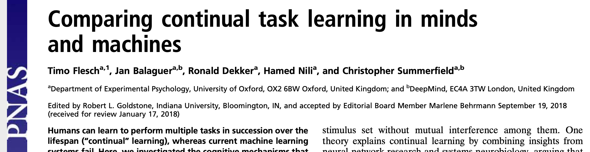
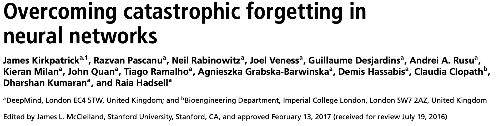
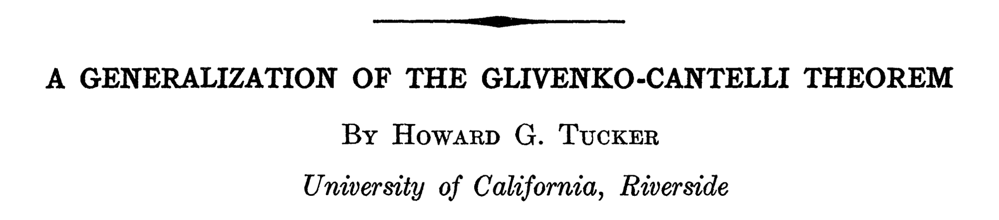
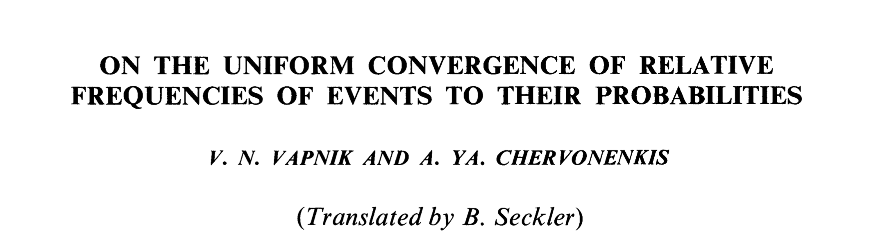
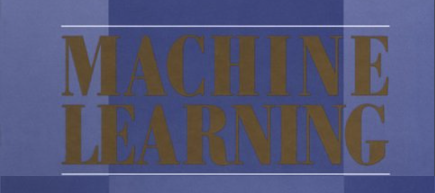
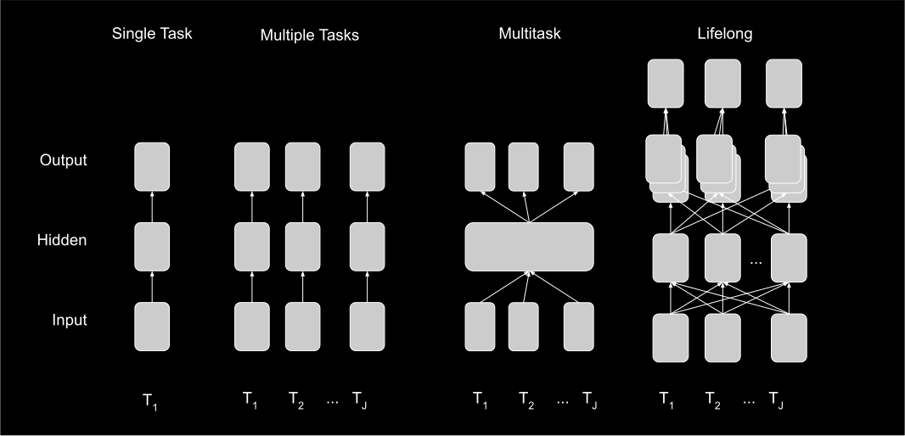

### Lifelong Learning via <br>Ensembling General Representations Moving Beyond Avoiding Catastrophic Forgetting <br> <br> <br> <br> <br> <br> <br> Joshua T. Vogelstein | {[BME](https://www.bme.jhu.edu/),[CIS](http://cis.jhu.edu/), [ICM](https://icm.jhu.edu/), [KNDI](http://kavlijhu.org/)}@[JHU](https://www.jhu.edu/) | [neurodata](https://neurodata.io) <br> [jovo@jhu.edu](mailto:j1c@jhu.edu) | <http://neurodata.io/talks> | [@neuro_data](https://twitter.com/neuro_data) --- .pull-left[ ## Lifelong Artificial Intelligence - Given a sequence of data associated with different tasks, .ye[continually learn] such that task performances improve by virtue of having data from other tasks. - Catastrophic forgetting: learning new tasks causes performance .ye[degradation] on previous tasks - Why stop there? Let's .ye[improve] performance on past tasks using future data ] -- .pull-right[ ## (Lifelong) Natural Intelligence - Biological/natural intelligence (BI) is .ye[progressive], data on future tasks can actually improve performance on past tasks: - learning a 2nd language improves 1st language - learning to run improves walking - Each task is a composition of many sub-tasks which .ye[overlap] with other tasks ] --- .pull-left[ ## Goals of this work - Formalize the above AI claims - Develop algorithms that move beyond catastrophic forgetting, motivated by observations from natural intelligence ] -- .pull-right[ ## Outline - Background - Lifelong learning - Evaluation criteria - Algorithm - Simulations - Real data - Theory - Discussion ] --- class:middle ### Background --- ## A simple learning example - $z_i=(x_i,y_i)$, $i \in \lbrace 1, 2, \ldots, 200 \rbrace$ - $x \in \mathbb{R}^2$ - $y \in \lbrace 0,1 \rbrace$ - we desire to learn a classifier that minimizes expected misclassification rate --- class: middle, center <img src="images/rock20/s2.png" style="position:absolute; top:0px; left:250px; height:100%;"/> --- <img src="images/rock20/s3.png" style="position:absolute; top:0px; left:250px; height:100%;"/> --- <img src="images/rock20/s3a.png" style="position:absolute; top:0px; left:250px; height:100%;"/> --- ## But there is a problem... "Training on a new set of items may drastically disrupt performance on previously learned items." -- McCloskey & Cohen, 1989 --- ## 30 years later... <img src="images/rock20/masse1.png" style="width:600px;"/>   --- ## Last Year: A Grand Challenge .pull-left[ "We need to invent a new kind of learning that .ye[leverages existing knowledge], rather than one that obstinately starts over from square one.”— Rebooting AI, Gary Marcus, Ernest Davis, 2019 ] .pull-right[ "One such obstacle is adaptability or robustness... efforts toward “transfer learning,” “domain adaptation,” and “.ye[lifelong learning]” are reflective of this obstacle." -- Judea Pearl, 2019 ] --- ## This Year: A Real Challenge - Industry - Microsoft/Amazon/Google trained a recommender system on existing products, then a new product is launched - Healthcare - A new disease, test, treatment exists - Augmented Reality - Walking around, go to a new city In all cases, re-training from scratch is just too expensive, we desire to dynamically update with new data --- class: middle ### A Theory of the Lifelong Learnable --- ## What is Learning?   <img src="images/Valiant84.png" style="width:500px;"/>  --- ## What is Learning? "An algorithm $f$ learns from data $\mathcal{D}_n$ with performance measure $\mathcal{E}$, if $f$'s performance improves with $n$.'' -- Tom Mitchell, 1997 (not exact quote) --- ## What are data? - Assume $Z_i$ is a $z \in \mathcal{Z}$ valued random variable - Sample $Z_i \sim P \in \mathcal{P}$, identically and independently - Let $\mathcal{D} := \mathcal{D}_n =\lbrace Z_1, \ldots, Z_n \rbrace \in \, \mathcal{Z}^n$ -- - Example 1: Classification - $Z_i = (X_i,Y_i)$ where $\mathcal{X}=\mathbb{R}^p$ and $\mathcal{Y}=\lbrace 0,1\rbrace$ - $P=P\_{XY}=P\_{X|Y}P\_Y$, where $P\_{X|Y}$ is Gaussian -- <!-- - Example 2: Reinforcment Learning - $Z$ is a sequence of states and actions + current state - $P$ a distribution over current states conditioned on - past states - past actions --> --- ## What is an Algorithm? $f$ is a learning algorithm, which maps from a subset of data to a hypothesis $h$, $$f : 2^{\mathcal{Z}^N} \rightarrow \mathcal{H}, \text{ where }N \gg n.$$ -- - Example 1: Classification - $f$ is *RandomForestClassifier.fit* - $h$ is *RandomForestClassifier.predict* <!-- TODO@Ronak do i need both h and f? please make a compelling arguemtn for both yes and no :) --> <!-- -- - Example 2: Reinforment Learning - $f$ - $h$ --> --- ## What is Performance? Generalization error $\mathcal{E}$ is the expected risk of algorithm $f$ for task $t$ with respect to training dataset size $n$: $$ \mathcal{E}(f,\mathcal{D} ) := \mathcal{E}(f,\mathcal{D} \mid t ) = \mathbb{E}\_P[\mathcal{R}(f(\mathcal{D}))].$$ -- Example 1: Classification - $\mathcal{R}$ is expected misclassification rate --- ## What is Learning? Letting $\mathcal{D}_0$ be a data corpus with no samples, .center[$f$ learns from data $\mathcal{D}$ iff $\mathcal{E}(f,\mathcal{D}) < \mathcal{E}(f,\mathcal{D}_0),$] $\mathcal{E}(f,\mathcal{D}_0)$ is the initial performance of $f$ prior to seeing data, and therefore a function of - prior on $\theta$ - inductive bias of $\mathcal{H}$ - estimation bias of $f$ - model bias of $\mathcal{P}$ --- ## What is a Setting? A setting is defined by a septuple $\mathcal{S} = \lbrace \mathcal{Z}, \mathcal{P}, \mathcal{A}, \mathcal{H}, \mathcal{L}, \mathcal{R}, \mathcal{F} \rbrace$ | Object | Notation | Example |:--- |:--- |:--- | | Measurements | $ \mathcal{Z}^n$ | $\mathbb{R}^p \times \lbrace 0, 1 \rbrace$ | | Distributions | $\mathcal{P} := \lbrace P_z \rbrace$ | Gaussian | Actions | $\mathcal{A}$ | {↑,↓,←, →,B,A,start} | Loss | $\mathcal{L}: \mathcal{A} \to \mathbb{R}_+$ | $ (\hat{y} - y_*)^2$ | Risk | $\mathcal{R}: \mathcal{P} \times \mathcal{L} \to \mathbb{R}_+$ | $\mathbb{E}_P[ \mathcal{L}(a)]$ | Hypotheses | $\mathcal{H} = \lbrace h: \mathcal{Z} \to \mathcal{A} \rbrace$ | hyperplanes | Algorithms | $\mathcal{F} = \lbrace f : 2^{\mathcal{Z}^N} \to \mathcal{H} \rbrace$ | *RandomForest.fit* --- ## What is a Task? Given - some true but unknown distribution $P\_z \in \mathcal{P}$, - a random data corpus $\mathcal{D}$ with sample size $n$ - a setting $\mathcal{S}$ <!-- - some (complexity) constraints on $f \in \mathcal{F}$, $f: \mathcal{Z}^n \to \mathcal{H}$: --> find the $f \in \mathcal{F}$ that minimizes generalization error in that setting: .center[ $f^* = \arg \min\_{f \in \mathcal{F}} \mathcal{E}(f,\mathcal{D})$.] --- ## What is Transfer Learning? Given - .ye[source] data $\mathcal{D}_1$, - .ye[target] data $\mathcal{D}_0$ from possibly another distribution. - let $\mathcal{D} = \mathcal{D}_0 \cup \mathcal{D}_1$. <!-- "An algorithm $f$ .ye[transfer] learns from data $\mathcal{D}_j$ with respect to transfer learning task $t$ with performance measure $\mathcal{E}^t$, if $f$'s performance at task $t$ improves with $\mathcal{D}_j$." --> -- .center[$f$ .ye[transfer] learns from $\mathcal{D}_1$ iff $\mathcal{E}(f,\mathcal{D}) < \mathcal{E}(f,\mathcal{D}_0).$] --- ## Can Honey Bees Transfer? <img src="images/rock20/honeybee1.jpg" style="position:absolute; top:150px; width:70%; "/> <br><br><br><br><br><br><br><br><br><br> - honey bees can also transfer to different sensory modality (smell) - honeybees do not forget how to do the first task (no forgetting) - this is called "forward transfer" - bees learn the concept of "sameness" --- ## What is a Multitask? - $T_i \in \lbrace{1,2,..,J\rbrace}=[J]$ is a task lable correspond to a distribution $P_j$ and setting $\mathcal{S}_j$ pair, - Each task could differ by $P_z$ or any element of $ \mathcal{S} = \lbrace \mathcal{Z}, \mathcal{P}, \mathcal{A}, \mathcal{H}, \mathcal{L}, \mathcal{R}, \mathcal{F} \rbrace$ - A multi-setting is a set of settings, $\vec{\mathcal{S}} = \lbrace \mathcal{S}_1, \ldots, \mathcal{S}_J \rbrace$ - $\mathcal{D} = \lbrace (Z_i,T_i) \rbrace^n $, where $(Z_i,T_i) \sim P$, and $Z_i | T_i = j \sim P_j$. - a multitask learning algorithm $f$ maps from a subset of data (including task labels) to a hypothesis $h$, $$ \mathcal{F}_{MT} = \lbrace f : 2^{(\mathcal{Z} \times [J])^N} \rightarrow \mathcal{H} \rbrace$$ Find the $f \in \mathcal{F}_{MT}$ that minimizes generalization error in that multi-setting: $$f^* = \arg \min\_{f \in \mathcal{F}_{MT}} \mathcal{E}(f,\mathcal{D}).$$ --- ## What is Multitask Learning? -- $f$ weakly .ye[multitask] learns from $\mathcal{D} \sim P$ in multi-setting $\vec{\mathcal{S}}$ if $$ \sum\_{j \in [J]} \mathcal{E}(f,\mathcal{D} \mid j ) P(j) < \sum\_{j \in [J]} \mathcal{E}(f,\mathcal{D}_j \mid j) P(j),$$ <br> and $f$ strongly .ye[multitask] learns from $\mathcal{D} \sim P$ in multi-setting $\vec{\mathcal{S}}$ if, $$ \mathcal{E}(f,\mathcal{D} \mid j) < \mathcal{E}(f,\mathcal{D}_j \mid j) \quad \forall j \in [J].$$ --- ## What is Sequential Learning? Same as "batch" learning, except $f$ updates existing hypothesis on basis of new data, that is, $$\mathcal{F}_S = \lbrace f : \mathcal{H} \times 2^{\mathcal{Z}^N} \rightarrow \mathcal{H} \rbrace$$ Find the $f \in \mathcal{F}_{S}$ that minimizes generalization error in setting $\mathcal{S}$: $$f^* = \arg \min\_{f \in \mathcal{F}_{S}} \mathcal{E}(f,\mathcal{D}).$$ --- ## What is a Lifelong Learning Task? Sequential multi-task learning, where - $|\mathcal{J}|$ is (countably) infinite - $J_n$ is the number of tasks observed after $n$ samples - Requires .ye[out of task] capabilities <!-- - Let $\mathcal{D}= \mathcal{D}\_1, \ldots , \mathcal{D}\_{J_n}$ --> - $f$ is a lifelong learning algorithm if $$ \mathcal{F}_{L2} = \lbrace f : \mathcal{H} \times 2^{(\mathcal{Z} \times \mathcal{J})^N} \rightarrow \mathcal{H} \rbrace$$ Find the $f \in \mathcal{F}_{L2}$ that minimizes generalization error in multi-setting $\vec{\mathcal{S}}$: $$f^* = \arg \min\_{f \in \mathcal{F}_{L2}} \mathcal{E}(f,\mathcal{D}).$$ --- ## What is Lifelong Learning? $f$ weakly .ye[lifelong] learns from $\mathcal{D} \sim P$ in multi-setting $\vec{\mathcal{S}}$ if $$ \sum\_{j \in [J\_n]} \mathcal{E}(f,\mathcal{D} \mid j ) P(T=j) < \sum\_{j \in [J\_n]} \mathcal{E}(f,\mathcal{D}\_j \mid j) P(T=j),$$ <br> and $f$ strongly .ye[lifelong] learns from $\mathcal{D} \sim P$ in multi-setting $\vec{\mathcal{S}}$ if $$ \mathcal{E}(f,\mathcal{D} \mid j) < \mathcal{E}(f,\mathcal{D}_j \mid j) \quad \forall j \in [J_n].$$ --- class:middle ### Evaluation Criteria --- ## Transfer Efficiency (TE) The transfer efficiency of learning algorithm $f$ for task $j$ is $$ TE\_j(f) := \frac{\mathcal{E}\_j(f, \mathcal{D}_j)}{\mathcal{E}\_j(f, \mathcal{D_n})}. $$ <br> Algorithm $ f $ transfer learns if $ TE_j(f) > 1 $. --- ## Forward / Reverse TE - Let $\mathcal{D}_F^j = \{(X_i, Y_i, T_i) \in \, \mathcal{D} : i \leq n_j\}$ be the set of all data up to sample $n_j$. - Forward transfer efficiency of $ f $ for task $j$ is the improvement on task $j$ resulting from all data .ye[preceding] task $j$ $$ FTE_j(f) := \frac{\mathcal{E}_j(f, \mathcal{D}_j)}{\mathcal{E}_j(f, \mathcal{D}_F^j)}. $$ -- <!-- ## Reverse Transfer Efficiency --> <!-- Reverse Transfer Efficiency (RTE) for task $j$ measures the improvement on task $j$ resulting from all data occurring after the last sample $i$ with $T_i = j$. --> - Reverse transfer efficiency of $ f $ for task $j$ is the improvement on task $j$ resulting from all data .ye[after] task $j$ <!-- The reverse transfer efficiency of $ f $ for task $j$ is --> $$ RTE\_j(f) := \frac{\mathcal{E}\_j(f, \mathcal{D}_F^j)}{\mathcal{E}_j(f, \mathcal{D})}. $$ --- .pull-left[ ### Catastrophic Forgetting performance on past tasks gets much .ye[worse] given new task data ] .pull-right[ ### Reverse Transfer performance on past tasks gets .ye[better] given new task data ] <br> Wise learning machines cannot simply avoid catastrophic forgetting, them must reverse transfer to gain understanding from every sample. --- class: middle ### Algorithm --- ## Composable Hypotheses .center[ .ye[$h := w \circ v \circ u = w(v(u(x)))$]] - Let $u$ be .ye[transformer] data to a new representation, $$ u : \mathcal{X} \to \tilde{\mathcal{X}}$$ - Let $v$ be .ye[voter] which operate on the transformed data outputs votes on all possible actions $$ v : \tilde{\mathcal{X}} \to \mathcal{P}_{A|X}$$ - Let $w$ be .ye[decider] which decides which actions to take on the basis of the votes $$ w : \mathcal{P}_{A|X} \to \mathcal{A}$$ <!-- - $h=w(v(u(z)))$ --> --- ## Simple Examples - Linear Discriminant Analysis (shallow) - $u$: projection onto a line - $v$: fraction of points per over/under threshold - $w$: maximum a posteriori class -- - Decision Tree (deep) - $u$: union of polytopes - $v$: fraction of points per class per leaf node - $w$: maximum a posteriori class --- ## Complicated Example - Decision Forest - $u_b$ for $B$ trees: union of overlapping polytopes - $v_b$ for $B$ trees: fraction of points per class per leaf node - $w$: maximum a posteriori class averaging over trees -- - Deep Nets - $u$: "backbone" (all but last layer) - $v$: softmax layer - $w$: max --- ## Composable Learning <br> | Scenario | Composition | :--- | :--- | Single task learning | $ h(\cdot) = w \circ v \circ u (\cdot)$ | Multiple independent task learning | $ h_j(\cdot) = w_j \circ v_j \circ u_j (\cdot)$ | Single task ensemble learning |$ h(\cdot) = w \circ \bigcup_j v_j \big( u_j (\cdot) \big)$ | Multitask learning | $ h_j(\cdot) = w_j \circ v \circ \bigcup_j u_j (\cdot)$ | Sequential Multitask learning | $ h\_j(\cdot) = w\_j \circ \bigcup\_{j,j'} v\_{j,j'} \big( u\_j (\cdot) \big) $ --- ## Key Idea - .ye[Different transformers can composed with voters] - Learn many different transformers $u_j(\cdot)$'s - For each $u\_j$, learn voter per task $v\_{j,j'}$'s - Use the decider to weight the various options - This is .ye[ensembling representations]. ### Notes - We learn new representation for each task - Dimensionality of internal representation grows linearly with number of tasks <!-- TODO@jv: somewhere must introduce the concept of adjusting representations --> --- ## Lifelong Learning Schema  <!-- TODO@jv: add increasing complexity schema --> <!-- TODO@jv: change to progressive? --> - Any learner with an explicit internal representation is ok, - e.g., decision trees, decision forests, deep networks - SVM, k-NN, etc., are not --- ## General Representations <br> .pull-left[ - Transformers learn representations - We desire representations that are sufficient for one task, and useful for other tasks - Decision trees, decision forests, and deep nets (with ReLu nodes) .ye[partition] feature space into polytopes ] -- .pull-right[ <img src="images/deep-polytopes.png" style="width:500px;"/> ] <!-- - NNs with ReLu nodes partitions feature space into polytopes ([NIPS, 2014](http://papers.nips.cc/paper/5422-on-the-number-of-linear-regions-of-deep-neural-networks.pdf)). --> --- class: middle ### Simulations --- ## A Transfer Example - .ye[XOR] - Samples in the (0,0) and (1,1) quadrants are purple - samples in the (0,1) and (1,0) quadrants are green - .lb[N-XOR] - Samples in the (0,0) and (1,1) quadrants are green - samples in the (0,1) and (1,0) quadrants are purple - Optimal decision boundaries for both problems are coordinate axes <img src="images/l2m_18mo/xor_nxor.png" style="width:475px" class="center"/> --- ## Lifelong Classifier <img src="images/columbia20/xor-nxor-all.png" style="height:300px;"> - .lb[Uncertainty Forest] uses 100 samples from XOR to learn partitions <!-- - .orange[Transfer Forest] uses $n$ samples from N-XOR to learn partitions --> - .ye[Lifelong Forest] uses 100 samples from XOR and $n$ samples from N-XOR to learn partitions <!-- TODO@hh: replace with four panel figure: TOP LEFT: XOR TOP RIGHT: N-XOR BOTTOM LEFT: x-axis is simply # samples, and y-axis is Generalization Error, and we show 4 lines: E_1(D_1), E_1(D_n), E_2(D_2), E_2(D_n) BOTTOM RIGHT: x-axis is # of samples, maybe starting with n/2, y-axis is TE, two lines, TE_1 and TE_2 --> --- ## Lifelong Classifier <img src="images/columbia20/xor-nxor-all2.png" style="height:500px;"> --- ## Different # of Classes <img src="images/spiral-all.png" style="height:500px;"> <!-- TODO@hh: replace with same 4 panel figure as above --> --- ## Graceful Forgetting <img src="images/rxor-suite-new-row.png" style="width:1000px;"> --- class: middle ### Real Data --- ## Consider an example .pull-left[ - *CIFAR 100* is a popular image classification dataset with 100 classes of images. - 500 training images and 100 testing images per class. - All images are 32x32 color images. - CIFAR 10x10 breaks the 100-class task problem into 10 tasks, each with 10-class. ] .pull-right[ <img src="images/l2m_18mo/cifar-10.png" style="position:absolute; left:650px; width:400px;"/> ] <!-- TODO@JD: replace CIFAR10 image with same thing but using CIFAR100 images and categories --> --- ## Previous State-of-the-Art <img src="images/l2m_18mo/progressive_netsc.png" style="width:650px;"/> Andrei A. Rusu et al. [Progressive Neural Networks](https://arxiv.org/abs/1606.04671), arXiv, 2016. <!-- Seungwon Lee, James Stokes, and Eric Eaton. "[Learning Shared Knowledge for Deep Lifelong Learning Using Deconvolutional Networks](https://www.ijcai.org/proceedings/2019/393)." IJCAI, 2019. --> --- Lifelong Forests demonstrates the .ye[largest forward transfer]. <!-- <img src="images/fte_cifar.png" style="height:530px;" /> --> <img src="images/fte_cifar_2.png" style="height:550px;" /> <!-- TODO@JD: replace with average FTE and add legend outside --> --- ## Reverse Transfer Efficiency - y-axis indicates .ye[reverse transfer efficiency] (RTE), - which is the ratio of "single task error" to "error using future tasks" - each task will have a line - if the line .ye[increases], that means it is doing "reverse transfer" --- Lifelong Forests .ye[uniquely exhibits reverse transfer]. <img src="images/cifar-rte.png" style="height:530px;" /> <!-- TODO@JD: replace with average RTE and add legend outside --> --- Lifelong Forests uniquely exhibits .ye[strong] lifelong learning. | Algorithm | Average TE | Min TE |:--- |:--- |:--- | | LF | 1.14 | .ye[1.06] | DF-CNN | 0.78 | 0.34 | Online EWC | 1.12 | 0.88 | EWC | 1.17 | 0.96 | SI | 1.02 | 0.76 | LwF | 1.19 | 0.92 | ProgNN | 0.99 | 0.87 <!-- <img src="images/all_TE.png" style="height:250px;" /> --> <!-- <img src="images/all_TE_2.png" style="height:500px;" /> --> <!-- TODO@JD: update table to have correct numbers --> --- class: middle ### Theory --- ## What do classifiers do? <br> learn: given $(x_i,y_i)$, for $i \in [n]$, where $y \in \lbrace 0,1 \rbrace$ 1. partition feature space into "parts", 2. compute plurality of points in each part. predict: given $x$ 2. find its part, 3. report the plurality vote in its part. --- ## What can regressors do? <br> learn: given $(x_i,y_i)$, for $i \in [n]$, where $y \in \mathbb{R}$ 1. partition feature space into "parts", 2. compute average of points in each part. predict: given $x$ 2. find its part, 3. report the average vote in its part. --- ## The fundamental theorem of statistical pattern recognition If each part is: 1. small enough, and 2. has enough points in it, then given enough data, one can learn *perfectly, no matter what*! $$\mathcal{E}\(f,\mathcal{D}) \rightarrow \mathcal{E}^*,$$ where $\mathcal{E}^*$is Bayes optimal. -- Stone, 1977 <!-- NB: the parts can be overlapping (as in kNN) or not (as in histograms) --> --- ## The fundamental .ye[conjecture] of transfer learning If each cell is: - small enough, and - has enough points in it, then given enough data, one can .ye[transfer learn] *perfectly, no matter what*! -- jovo, 2020 --- class: middle ### Discussion --- ## Key Insights 1. Avoiding catastrophic forgetting simply means reverse transfer is 1, but why stop there? 2. Ensembling internal representations enables reverse transfer > 1 --- ## Limitations 2. Tasks must be discrete 3. Data must be batched into tasks 4. Tasks must be known 5. Feature space must be the same for all tasks 6. Only unimodal data supported (e.g., images) 1. Internal representation grows linearly with # of tasks 1. Must grow rather than recruit new internal representations --- ## Key Accomplishments - Formalized Lifelong Learning as generalization of classical machine learning - Introduced novel evaluation criteria: forward and reverse transfer efficiency - Proposed generic lifelong learning algorithm framework by ensembling internal representations - Implemented Lifelong Forests as a specific example - Demonstrated Lifelong Forests uniquely exhibits - reverse transfer - stong lifelong learning - Conjectured theory promising to prove consistency and robustness --- ## References 1. H. Helm et al. Lifelong Learning Forests, 2020 1. R. Mehta et al. A General Theory of Learnability, 2020. 3. T. M. Tomita et al. [Sparse Projection Oblique Randomer Forests](https://arxiv.org/abs/1506.03410). arXiv, 2018. 1. R Guo, et al. [Estimating Information-Theoretic Quantities with Uncertainty Forests](https://arxiv.org/abs/1907.00325). arXiv, 2019. 1. R. Perry, et al. Manifold Forests: Closing the Gap on Neural Networks. preprint, 2019. 1. C. Shen and J. T. Vogelstein. [Decision Forests Induce Characteristic Kernels](https://arxiv.org/abs/1812.00029). arXiv, 2018 7. J. Browne et al. [Forest Packing: Fast, Parallel Decision Forests](https://arxiv.org/abs/1806.07300). SIAM ICDM, 2018. 1. M. Madhya, et al. [Geodesic Learning via Unsupervised Decision Forests](https://arxiv.org/abs/1907.02844). arXiv, 2019. More info: [https://neurodata.io/sporf/](https://neurodata.io/sporf/) --- ### Acknowledgements <!-- <div class="small-container"> <img src="faces/ebridge.jpg"/> <div class="centered">Eric Bridgeford</div> </div> <div class="small-container"> <img src="faces/pedigo.jpg"/> <div class="centered">Ben Pedigo</div> </div> <div class="small-container"> <img src="faces/jaewon.jpg"/> <div class="centered">Jaewon Chung</div> </div> --> <div class="small-container"> <img src="faces/yummy.jpg"/> <div class="centered">yummy</div> </div> <div class="small-container"> <img src="faces/lion.jpg"/> <div class="centered">lion</div> </div> <div class="small-container"> <img src="faces/violet.jpg"/> <div class="centered">baby girl</div> </div> <div class="small-container"> <img src="faces/family.jpg"/> <div class="centered">family</div> </div> <div class="small-container"> <img src="faces/earth.jpg"/> <div class="centered">earth</div> </div> <div class="small-container"> <img src="faces/milkyway.jpg"/> <div class="centered">milkyway</div> </div> ##### JHU <div class="small-container"> <img src="faces/cep.png"/> <div class="centered">Carey Priebe</div> </div> <!-- <div class="small-container"> <img src="faces/randal.jpg"/> <div class="centered">Randal Burns</div> </div> --> <!-- <div class="small-container"> <img src="faces/cshen.jpg"/> <div class="centered">Cencheng Shen</div> </div> --> <!-- <div class="small-container"> <img src="faces/bruce_rosen.jpg"/> <div class="centered">Bruce Rosen</div> </div> <div class="small-container"> <img src="faces/kent.jpg"/> <div class="centered">Kent Kiehl</div> </div> --> <!-- <div class="small-container"> <img src="faces/mim.jpg"/> <div class="centered">Michael Miller</div> </div> <div class="small-container"> <img src="faces/dtward.jpg"/> <div class="centered">Daniel Tward</div> </div> --> <!-- <div class="small-container"> <img src="faces/vikram.jpg"/> <div class="centered">Vikram Chandrashekhar</div> </div> <div class="small-container"> <img src="faces/drishti.jpg"/> <div class="centered">Drishti Mannan</div> </div> --> <div class="small-container"> <img src="faces/jesse.jpg"/> <div class="centered">Jesse Patsolic</div> </div> <!-- <div class="small-container"> <img src="faces/falk_ben.jpg"/> <div class="centered">Benjamin Falk</div> </div> --> <!-- <div class="small-container"> <img src="faces/kwame.jpg"/> <div class="centered">Kwame Kutten</div> </div> --> <!-- <div class="small-container"> <img src="faces/perlman.jpg"/> <div class="centered">Eric Perlman</div> </div> --> <!-- <div class="small-container"> <img src="faces/loftus.jpg"/> <div class="centered">Alex Loftus</div> </div> --> <!-- <div class="small-container"> <img src="faces/bcaffo.jpg"/> <div class="centered">Brian Caffo</div> </div> --> <!-- <div class="small-container"> <img src="faces/minh.jpg"/> <div class="centered">Minh Tang</div> </div> --> <!-- <div class="small-container"> <img src="faces/avanti.jpg"/> <div class="centered">Avanti Athreya</div> </div> --> <!-- <div class="small-container"> <img src="faces/vince.jpg"/> <div class="centered">Vince Lyzinski</div> </div> --> <!-- <div class="small-container"> <img src="faces/dpmcsuss.jpg"/> <div class="centered">Daniel Sussman</div> </div> --> <!-- <div class="small-container"> <img src="faces/youngser.jpg"/> <div class="centered">Youngser Park</div> </div> --> <!-- <div class="small-container"> <img src="faces/shangsi.jpg"/> <div class="centered">Shangsi Wang</div> </div> --> <!-- <div class="small-container"> <img src="faces/tyler.jpg"/> <div class="centered">Tyler Tomita</div> </div> --> <!-- <div class="small-container"> <img src="faces/james.jpg"/> <div class="centered">James Brown</div> </div> --> <!-- <div class="small-container"> <img src="faces/disa.jpg"/> <div class="centered">Disa Mhembere</div> </div> --> <!-- <div class="small-container"> <img src="faces/gkiar.jpg"/> <div class="centered">Greg Kiar</div> </div> --> <!-- <div class="small-container"> <img src="faces/jeremias.png"/> <div class="centered">Jeremias Sulam</div> </div> --> <div class="small-container"> <img src="faces/meghana.png"/> <div class="centered">Meghana Madhya</div> </div> <!-- <div class="small-container"> <img src="faces/percy.png"/> <div class="centered">Percy Li</div> </div> --> <div class="small-container"> <img src="faces/hayden.png"/> <div class="centered">Hayden Helm</div> </div> <div class="small-container"> <img src="faces/rguo.jpg"/> <div class="centered">Richard Gou</div> </div> <div class="small-container"> <img src="faces/ronak.jpg"/> <div class="centered">Ronak Mehta</div> </div> <div class="small-container"> <img src="faces/jayanta.jpg"/> <div class="centered">Jayanta Dey</div> </div> ##### Microsoft Research <div class="small-container"> <img src="faces/chwh-180x180.jpg"/> <div class="centered">Chris White</div> </div> <div class="small-container"> <img src="faces/weiwei.jpg"/> <div class="centered">Weiwei Yang</div> </div> <div class="small-container"> <img src="faces/jolarso150px.png"/> <div class="centered">Jonathan Larson</div> </div> <div class="small-container"> <img src="faces/brtower-180x180.jpg"/> <div class="centered">Bryan Tower</div> </div> ##### DARPA Hava, Ben, Robert, Jennifer, Ted. </div> <!-- <img src="images/funding/nsf_fpo.png" STYLE="HEIGHT:95px;"/> --> <!-- <img src="images/funding/nih_fpo.png" STYLE="HEIGHT:95px;"/> --> <!-- <img src="images/funding/darpa_fpo.png" STYLE=" HEIGHT:95px;"/> --> <!-- <img src="images/funding/iarpa_fpo.jpg" STYLE="HEIGHT:95px;"/> --> <!-- <img src="images/funding/KAVLI.jpg" STYLE="HEIGHT:95px;"/> --> <!-- <img src="images/funding/schmidt.jpg" STYLE="HEIGHT:95px;"/> --> --- class:center <img src="images/l_and_v.jpeg" style=" height:600px;"/> --- class: middle, inverse ## .center[Extra Slides] --- class: middle # Biology --- ## Do brains do it? -- (brains obviously learn) 1. Do brains partition feature space? 2. Is there some kind of "voting" occurring within each part? --- ## Brains partition - Feature space = the set of all possible inputs to a brain - Partition = only a subset of "nodes" respond to any given input - Examples 1. visual receptive fields 2. place fields / grid cells 3. sensory homonculus <br> <img src="images/rock20/Side-black.gif" style="height:230px;"/> <img src="images/rock20/Front_of_Sensory_Homunculus.gif" style="height:230px;"/> <img src="images/rock20/Rear_of_Sensory_Homunculus.jpg" style="height:230px;"/> --- ## Brains vote - Vote = pattern of responses indicate which stimulus evoked response <img src="images/rock20/brody1.jpg" style="height:400px;" /> --- ## Can Humans Reverse Transfer? - "Knowledge and skills from a learner’s first language are used and reinforced, deepened, and expanded upon when a learner is engaged in second language literacy tasks." -- [American Council on the Teaching of Foreign Languages](https://www.actfl.org/guiding-principles/literacy-language-learning) --- ## Proposed Experiments - Behavioral Experiment - Source Task: Delayed Match to Sample (DMS) on colors - Target Task A: Delayed Match to Not-Sample on colors - Target Task B: DMS on orientation - Measurements - Arc-GFP to identify which neurons could learn - Ca2+-YFP to measure neural activity - Narp-RFP to identify which neurons actually consolidate - Species - Zebrafish (Engert) - Mouse (McNaughton and/or Tolias) - Human (Isik) --- class: middle # Summary --- ## What is Lifelong Learning? A computational system .ye[lifelong learns] from data if, given a stream of data and tasks, data associated with one task is used to improve performance on both past and future tasks. --- ## What is Lifelong Learning? A computational system .ye[lifelong learns] from data if, given a stream of data and tasks, data associated with one task is used to improve performance on both past and future tasks. Motivation: in biology, learning subsequent tasks often improves performance on previously learned tasks The key is learning internal representations of each data sample that is useful for multiple tasks --- ## Current State of the Art 1. Used fixed architecture, finite capacity 2. Increase capacity, with complicated architecture --- ## Our Approach 1. Formally define lifelong learning as a generalization of single task machine learning, with suitable metrics 2. Develop a generic lifelong learning approach, Omni-Directional Ensembling Representation (ODER) 1. Learn a new representation for each task 2. Ensemble all representations to make predictions 3. Implement a specific example of this approach, Lifelong Forests 4. Demonstrate that Lifelong Forests uniquely demonstrates lifelong learning --- ## Evaluation Criteria ("Metrics") **Transfer Efficiency**: Performance on a task with only task-specific data, normalized by performance on the task including lots of other data. **Forward Transfer Efficiency**: Performance on a task with only task-specific data, normalized by performance on the task including .ye[all past data]. **Reverse Transfer Efficiency**: Performance on a task with only up until and including task-specific data, normalized by performance on .ye[all data, both past and future]. -- If you don't reverse transfer, you haven't lifelong learned. --- .ye[Lifelong Forests] uniquely exhibits reverse transfer. <img src="images/cifar-rte.png" style="height:530px;" /> --- ## Not So Clevr <img src="images/not-so-clevr.png" style="width:650px" /> --- ### RF is more computationally efficient <img src="images/s-rerf_6plot_times.png" style="width:750px;"/> --- ### Lifelong learning algorithms - Fundamentally, a lifelong learning algorithm must summarize previous tasks via a useful representation to effectively use these tasks for learning a new task. - In supervised classification, the most useful representation of a task is its corresponding optimal decision boundary. - More generally, tessellating space into cells yields a representation/compression valuable for any subsequence inference task. --- ### What are Decision Forests? - Two things: 1. a partitioning of the space into mutually exclusive cells 2. an assignment of probabilities within each cell - This is true for decision trees, random forests, gradient boosting trees, etc. - Axis-aligned trees yield cells that are each right rectangular prisms (also called rectangular cuboids, rectangular parallelepiped, and orthogonal parallelipiped) - Axis-oblique trees yield cells that are more general polytopes Note: Deep Nets with ReLu activation function also tesselate space into polytopes --- ### Key Algorithmic Insight - Cells of a partition of space can be a universal representation - Partitions can be learned on a **per task** basis - Probabilities can be estimated given **any** partition, including those from other tasks - Use all data to estimate probabilities on the partitions learned separately for each task - Average probabilities learned on each partition to obtain final answer --- ### Algorithm (High-Level) - Input: $n$ points associated with $J$ different supervised classification/regression tasks - Output: A classifier/regressor function for each task - Algorithm: - for $j \in [J]$ - Learn partition of space using only data from task $j$ - Learn probabilities using partitions $1, \ldots, j$ - Output average over all $j$ probability estimates -- Notes: - This exact procedure can be applied as $J$ continues to increase - This procedure could be use any pair of algorithms for learning partitions and probabilities. - We focus on random forests for simplicity. - We assumed related measurement spaces, specifically, $\mathcal{Z}\_j= \lbrace \mathcal{X} \times \mathcal{Y}\_j \rbrace$ --- ### Basic L2M (unbounded storage) <!-- Given the above assumptions, all lifelong learning algorithms can be characterized as follows. --> For each $(z_t, j_t)$, 1. update .pu[transformer] using all available data: $h\_t (\lbrace z\_t,j\_t \rbrace) \rightarrow \hat{f}\_t$ 2. for each sample, apply .pu[transformer]: $\hat{f}\_t (z\_i) = \tilde{z}\_i$ 3. for each .pu[decider], update using all available data: $g\_t (\lbrace \tilde{z}\_t,j\_t \rbrace) \rightarrow \lbrace \hat{\eta}\_j \rbrace $ 4. apply .pu[decider]: $\hat{\eta}\_{j\_t}(\tilde{z}\_t) \rightarrow a\_t$ --- ### Basic L2M (bounded storage) For each $(z_t, j_t)$, 1. update .pu[transformer]: $h\_t ( z\_t,j\_t, \hat{f}\_{t-1} ) \rightarrow \hat{f}\_t$ 2. apply .pu[transformer]: $\hat{f}\_t (z\_t) = \tilde{z}\_t$ 3. update all .pu[deciders]: $g\_t ( \tilde{z}\_t,j\_t, \hat{\eta}\_{t-1} ) \rightarrow \lbrace \hat{\eta}\_j \rbrace $ 4. apply .pu[decider]: $\hat{\eta}\_{j\_t}(\tilde{z}\_t) \rightarrow a\_t$ --- ### Lifelong Forests - Assume data are batched into unique tasks - For each task, $ z_t | j_t = j$ 1. Learn a new forest using data only from task $j_t$ 2. Apply forest to each observation so far 3. For each task, update plurality/average vote per tree 4. Apply average vote for $z_t$ --- # Universal Slides --- ### What is Universal Transfer Learning? We say that $f$ **universally** transfers in setting $S$ iff $\exists \; \delta, n\_0 > 0$ such that $\forall n\_j > n\_0$: <!-- $\forall n,n' > n\_0$, $\exists \; \delta > 0$ such that: --> $\exists P,Q \in \mathcal{P}: TLE\_{n,n'}^{P,Q}(f) < 1 - \delta$ (sometimes better), and $\forall P,Q \in \mathcal{P}: TLE\_{n,n'}^{P,Q}(f) \leq 1 + \delta$ (never much worse). --- ### What is Universal MT Learning? We say that $f$ **universally** multi-task learns in settings $\vec{S}$ iff $\exists \; \delta, n\_0 > 0$ such that $\forall n\_j > n\_0$: $\exists \vec{P} \in \vec{\mathcal{P}}: MTE\_{\vec{n}}^{\vec{P}}(f) < 1 - \delta$ (sometimes better), and $\forall \vec{P} \in \vec{\mathcal{P}}: MTE\_{\vec{n}}^{\vec{P}}(f) \leq 1 + \delta$ (never much worse). --- ### What is Universal Lifelong Learning? We say that $f$ **universally** lifelong learns in settings $\vec{S}$ iff $\forall n\_j > n\_0$ and $\forall \vec{P} \in \vec{\mathcal{P}}$, lifelong learning holds. --- ## Consider the iris dataset - introduced by RA Fisher (inventor of modern statistics) - 150 points from 3 species of iris's - setosa, virginica, versicolor - 4 dimensions/features: - sepal length, sepal width, petal length, petal width --- <img src="images/rock20/sphx_glr_plot_iris_dtc_001.png" style="position:absolute; top:0px; left:0px; height:100%;"/> --- ### Generalized Learning <br> | | $J>1$ | Sequential | | :---: | :---: | :---: | | Machine | 0 | 0 | | Multi-task | 1 | 0 | | Lifelong | 1 | 1 | --- ### Three Kinds of Lifelong Learning 1. Supervised: setting is provided for each data sample 2. Unsupervised: setting is not provided for any data sample 3. Semi-supervised: setting is sometimes provided for some data samples -- We largely focus on supervised setting hereafter. --- class: middle, inverse ## .center[General (Lifelong) Learning Machines] --- ### Machine Learning: Basic Set-Up Given 1. A task $ T $ 2. Observed data $ z\_1, z\_2, .., z\_n $ Assume 1. The $ z\_t $ are independent --- ### Constituents of Learning Machines 1. .pu[representation]: data are transformed into a representation space 2. .pu[transformer]: maps each point to the representation space 3. .pu[decider]: takes an action using the transformed data --- ### Example 1 Linear 2-class classification (we want to label black dot) <img src="images/l2m_18mo/cml_all_data.png" style="width:500px" class="center"/> --- #### Example 1.1 - Linear Discriminant Analysis 1. .pu[representation]: the real number line 2. .pu[transformer]: projection matrix that maps each feature vector onto real number line 3. .pu[decider]: threshold such that values above threshold are one class, and below are the other <img src="images/l2m_18mo/cml_linear.jpg" style="width:600px" class="center"/> <!-- diagram of linear classifier (projection from R^d to R then threshold) for two class, spherical gaussians --> <!-- figure of problem --> <!-- figure with representation --> <!-- figure showing transformation of one data point to the line --> <!-- figure showing decider acting on a the transformed data point --> --- #### Example 1.2 - Decision Tree 1. .pu[representation]: a partition of $ \mathbb{R}^{d} $ 2. .pu[transformer]: maps a data point to a cell of the partition 3. .pu[deciders]: plurality (or average) of elements per cell <img src="images/l2m_18mo/cml-tree.jpg" style="width:650px" class="center"/> <!-- diagram of a partition for two class, spherical gaussians --> <!-- figure of representation (partition) --> <!-- figure of a data point in a cell of the partition --> <!-- figure of classifying a data point in a cell of the partition --> --- #### Example 1.3 - Decision Forests 1. .pu[representation]: a set of partitions of $ \mathbb{R}^{d} $ 2. .pu[transformer]: maps a data point to a cell of each of the partitions 3. .pu[deciders]: average of decision trees (posterior probabilities) <img src="images/l2m_18mo/cml_forest.jpg" style="width:600px" class="center"/> Each tree uses a different subset of data to transform (partition) space